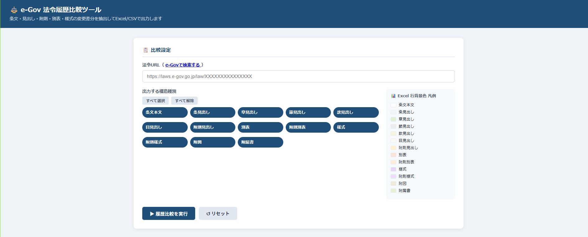

e-Gov 法令CSV変換ツール（Prototype）
e-GovでダウンロードしたXMLファイルwrをCSVに変換するツールです。
法規制調査、規格管理、文書比較、データ構造化を支援するための
実務ツールを開発・改善しています。
ここに掲載しているツールは、実務上の課題から生まれたプロトタイプまたは内部利用ツールです。 一部ツールはクライアント案件向けに限定提供しています。
e-GovでダウンロードしたXMLファイルwrをCSVに変換するツールです。

e-Gov APIを利用し、法令改正履歴の条文差分を抽出し、Excel形式で視覚的に整理するツールです。
掲載内容は、公開可能な範囲に限定しています。
実際の業務データ、クライアント情報、ライセンス制限のある文書、非公開仕様は掲載していません。
デモ、詳細仕様、業務適用可能性については、お問い合わせください。